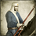
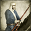

Requires

Enables
- Units:


 

Spawned Garrisons
- Units:
Basic Building Statistics (can be modified by difficulty level, arts, skills, traits and retainers)
- Cost: 12500
- Recruitment capacity (units in training): +1
- -2 to happiness from modernisation
Clan Effects
- +4 to modernisation (clan development)
Description
War is too serious to be left to brave amateurs.
An army war college allows the recruitment of modern units in a province. Only one may be built. Warfare as an academic, intellectual challenge is the modern way; individual bravery is still of value, but the scientific approach to crushing an enemy has much to recommend it. When the Meiji government created a war college in 1882, they employed Prussian officers as teachers and to create a syllabus. By then, the Prussian military system had proven to be most effective, defeating both Austria and France in lightning-quick campaigns. Part of this effectiveness was attributed to the high professional standards of the senior Prussian officers, and it was these standards that the Japanese wanted to have in their army. In one sense, they did produce able men including several prime ministers, but fierce rivalry with the Imperial Japanese Navy was always source of tension and created competing national objectives.